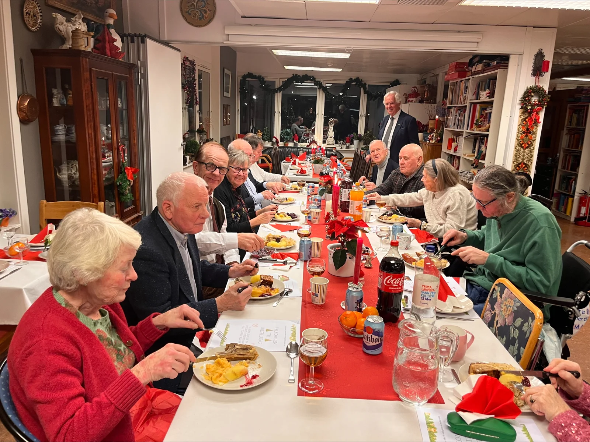
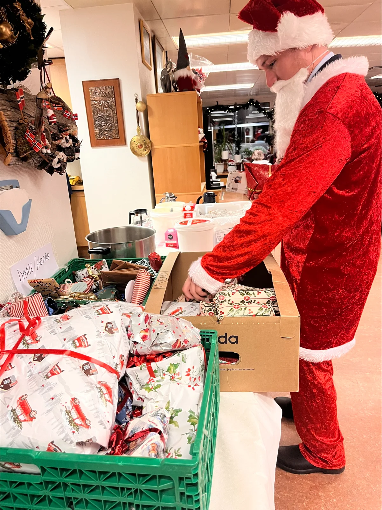
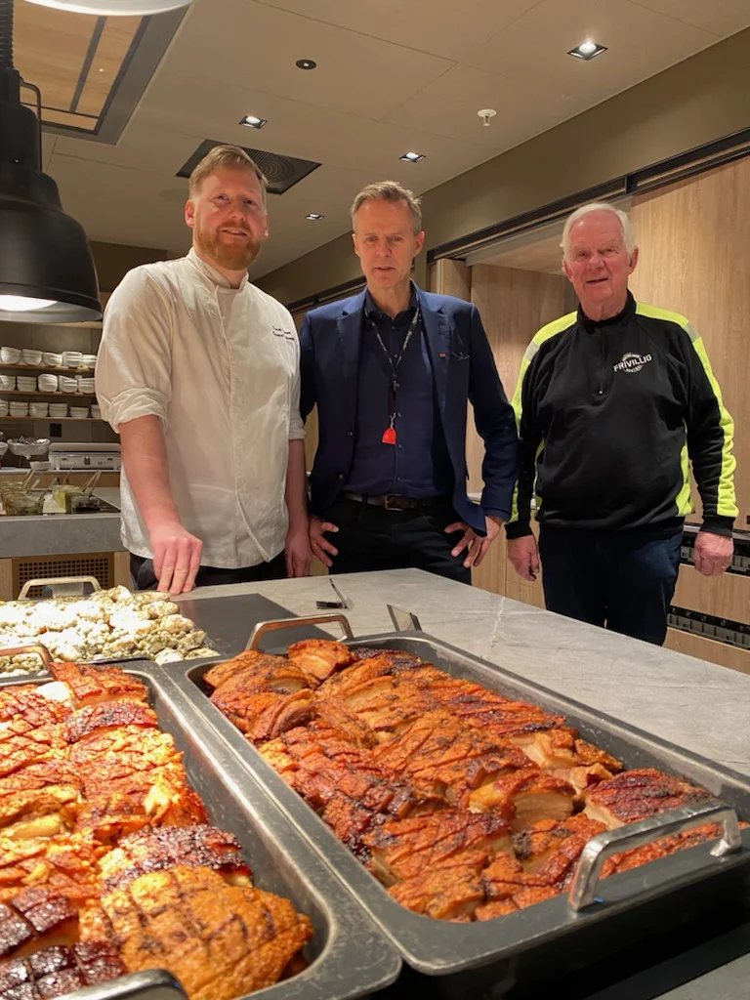
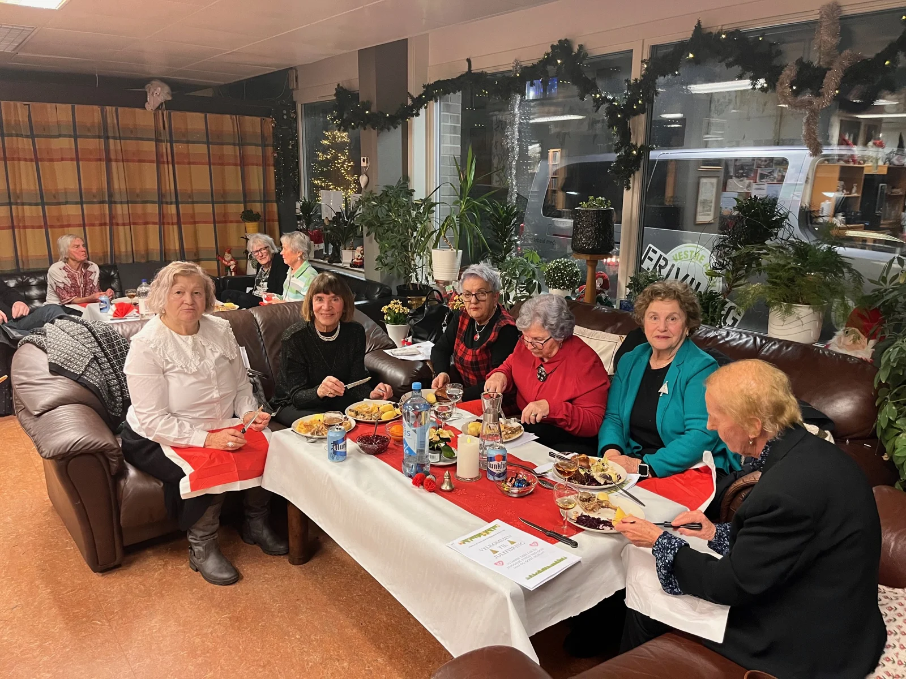

Julaften på Hovstua · 24. desember
Sammen skaper vi en god julaften
Et pyntet bord, god julemat og noen å dele kvelden med. Vil du være med og skape juleglede? Bli med som frivillig, eller gled noen med en julegave.
En kveld sammen. Mange gode minner.

Bli med i julegjengen
Gi av tiden din på julaften
Vi samler en god gjeng på 10 frivillige under ledelse av julesjefen Ola. Sammen gjør vi klart til feiring, tar imot gjestene og sørger for en hyggelig kveld på Hovstua.
Vi trenger hjelp til å pynte, servere og rydde. Oppgavene deler vi på, og Ola leder oss gjennom dagen.
24. desember
Slik blir dagen
- Kl. 14.00
- Vi møtesPynter og gjør klart sammen
- Kl. 16.00
- Gjestene kommerVi serverer og skaper en hyggelig kveld
- Ca. kl. 22.00
- Ferdig for kveldenEtter festen rydder vi sammen
En liten gave. En stor glede.
Vil du gi en julegave?
Du kan bidra til feiringen selv om du ikke er med på selve julaften. Vi samler inn julegaver til gjestene og setter stor pris på morsomme og nyttige gaver.
Det er ikke meningen med store, kostbare gaver. En liten oppmerksomhet er fint.
Slik gjør du
- Velg en morsom eller nyttig gave.
- Pakk den inn og merk den med gutt, jente, mann eller kvinne.
- Lever den på Møteplass Vinderen.

Takk til Scandic Holmenkollen
God julemat, laget med omtanke
Maten vi serverer, sponses og lages av Scandic Holmenkollen. Det betyr mye for feiringen og for alle som samles rundt bordet.
Frivilliggjengen sørger for pynting, servering og rydding – og for at gjestene blir møtt med varme.

Bli frivillig på julaften
Vil du bli med på laget?
Send oss kontaktinformasjonen din, så tar vi kontakt og avtaler deltakelsen. Sett av julaften fra kl. 14.00 til omtrent kl. 22.00.
Har du spørsmål? Ring Espen på 481 37 180 eller send e-post til espen@vestreaker.frivilligsentral.no.
En tradisjon vi skaper sammen
Det beste er å være sammen
Bildene på siden er fra tidligere feiringer. De forteller om det vi ønsker å skape igjen: god mat, samtaler og en julaften å dele med andre.
